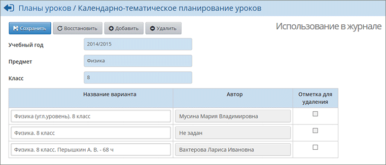

Варианты плана уроков
Система "Сетевой Город" позволяет задать любое количество версий календарно-тематического планирования (КТП) по предмету в классе. Например, разные КТП по одному и тому же предмету могут иметь разные подгруппы в классе, или у каждого учителя может быть своё планирование. Для этого предназначен механизм вариантов плана уроков.

На данной странице показаны варианты планирования для выбранных параллели и предмета. Вы можете:
·
изменить название варианта планирования;
·
добавить новый вариант планирования;
·
указать использование вариантов планирования в классном журнале.
Кроме того, пользователь с правами администратора системы или завуча может назначить автора конкретного плана уроков, что даёт возможность разделить доступ к редактированию планирования.
См.подробнее Авторство календарно-тематического планирования.